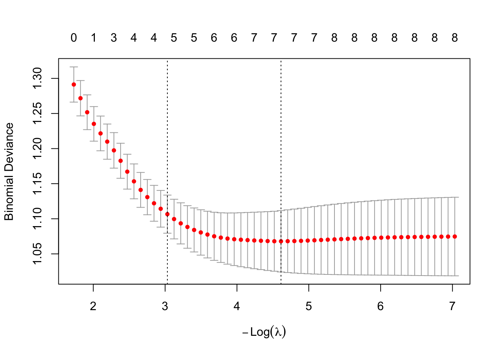

8.4 Logistic Regression for the Heart Data Set in R
The Python version of the example can be found here: Python Code for Logistic .
In this example we work with the South African heart data, available here.
The SAheart data set comes from a study of heart-disease risk factors among South African men of mixed ancestry. It contains \(462\) observations on lifestyle, medical history, and physiological measurements—age, alcohol intake, tobacco use, blood pressure, cholesterol, and family history of heart disease, among others.
Our goal is to estimate the probability that an individual has coronary heart disease (CHD).
The variables are:
sbp- systolic blood pressuretobacco- cumulative tobacco (kg)ldl- low-density lipoprotein cholesteroladiposity- a numeric measure of relative body fatfamhist- family history of heart disease (Present,Absent)typea- Type A behaviorobesityalcohol- current alcohol consumptionage- age at onsetchd- response: coronary heart disease (1= yes,0= no)
##
## Call:
## glm(formula = chd ~ ., family = binomial, data = SAheart)
##
## Coefficients:
## Estimate Std. Error z value Pr(>|z|)
## (Intercept) -5.9207616 1.3265724 -4.463 8.07e-06 ***
## row.names -0.0008844 0.0008950 -0.988 0.323042
## sbp 0.0076602 0.0058574 1.308 0.190942
## tobacco 0.0777962 0.0266602 2.918 0.003522 **
## ldl 0.1701708 0.0597998 2.846 0.004432 **
## adiposity 0.0209609 0.0294496 0.712 0.476617
## famhistPresent 0.9385467 0.2287202 4.103 4.07e-05 ***
## typea 0.0376529 0.0124706 3.019 0.002533 **
## obesity -0.0661926 0.0443180 -1.494 0.135285
## alcohol 0.0004222 0.0045053 0.094 0.925346
## age 0.0441808 0.0121784 3.628 0.000286 ***
## ---
## Signif. codes: 0 '***' 0.001 '**' 0.01 '*' 0.05 '.' 0.1 ' ' 1
##
## (Dispersion parameter for binomial family taken to be 1)
##
## Null deviance: 596.11 on 461 degrees of freedom
## Residual deviance: 471.16 on 451 degrees of freedom
## AIC: 493.16
##
## Number of Fisher Scoring iterations: 5We obtain fitted values from the model and summarize the classifications at the \(0.5\) threshold:
##
## yhat 0 1
## FALSE 255 79
## TRUE 47 818.4.1 Goodness of Fit
In logistic regression we do not have a residual sum of squares (RSS), so we need other metrics to assess fit. Deviance measures, which are also based on the likelihood, are the standard choice. When all of the \(x_i\) are unique, the residual deviance is \[ \mathrm{Deviance} = -2 \Biggl( \sum_{i: y_i=1} \log \hat{p}_i + \sum_{i: y_i=0} \log(1-\hat{p}_i) \Biggr), \] where \(\hat{p}_i\) is the fitted probability \(P(Y=1 \mid X=x_i)\).
At the bottom of the summary output in R we see two deviances:
Null deviance: the deviance of a logistic regression with only an intercept. Here the estimated probability \(P(Y=1 \mid X=x_i)\) is the sample mean of the observed \(y_i\) values and does not depend on \(x_i\).
Residual deviance: the deviance of the fitted model under consideration, using the model’s fitted probabilities \(\hat{p}_i\).
We can also compute them directly:
p.hat = heart.logistic$fitted.values
-2 * (sum(log(p.hat[SAheart$chd == 1])) + sum(log(1 - p.hat[SAheart$chd ==
0])))## [1] 471.1591p0.hat = rep(mean(SAheart$chd), length(SAheart$chd))
-2 * (sum(log(p0.hat[SAheart$chd == 1])) + sum(log(1 - p0.hat[SAheart$chd ==
0])))## [1] 596.1084Solving this problem using numerical optimization, without glm
## Log-likelihood (not the negative log-likelihood)
logistic.loglik <- function(b, x, y) {
bm = as.matrix(b)
xb = x %*% bm
# this returns the log-likelihood
return(sum(y * xb) - sum(log(1 + exp(xb))))
}
## Gradient
logistic.gradient <- function(b, x, y) {
bm = as.matrix(b)
expxb = exp(x %*% bm)
return(t(x) %*% (y - expxb/(1 + expxb)))
}
## We can now use the `optim` function to solve the
## problem:
SAheart$famhist = ifelse(SAheart$famhist == "Present", 1, 0)
x = as.matrix(cbind(intercept = 1, SAheart[, 2:10]))
y = as.matrix(SAheart[, 11])
b = rep(0, ncol(x))
# The objective above is the log-likelihood, so we maximize
# (equivalently, optim minimizes -ell when fnscale = -1):
optim(b, fn = logistic.loglik, gr = logistic.gradient, method = "BFGS",
x = x, y = y, control = list(fnscale = -1))## $par
## [1] -6.150733305 0.006504017 0.079376464 0.173923988 0.018586578
## [6] 0.925372019 0.039595096 -0.062909867 0.000121675 0.045225500
##
## $value
## [1] -236.07
##
## $counts
## function gradient
## 74 16
##
## $convergence
## [1] 0
##
## $message
## NULLThe result matches the glm() solution. If a general-purpose solver is not available, we can use Newton–Raphson instead; that requires a function for the Hessian.
8.4.2 Variable Selection
Variable selection can also be needed in a logistic regression setting. We next ask which of the methods and criteria from linear regression carry over.
AIC/BIC
We can still use AIC and BIC because the logistic model has a likelihood. Unlike linear regression, however, we cannot use the leaps-and-bounds algorithm to enumerate all submodels, because the logistic likelihood is not a residual sum of squares. Instead we use a greedy search: stepwise, backward, or forward selection.
As an example:
## Start: AIC=493.16
## chd ~ row.names + sbp + tobacco + ldl + adiposity + famhist +
## typea + obesity + alcohol + age
##
## Df Deviance AIC
## - alcohol 1 471.17 491.17
## - adiposity 1 471.67 491.67
## - row.names 1 472.14 492.14
## - sbp 1 472.88 492.88
## <none> 471.16 493.16
## - obesity 1 473.47 493.47
## - ldl 1 479.65 499.65
## - tobacco 1 480.27 500.27
## - typea 1 480.75 500.75
## - age 1 484.76 504.76
## - famhist 1 488.29 508.29
##
## Step: AIC=491.17
## chd ~ row.names + sbp + tobacco + ldl + adiposity + famhist +
## typea + obesity + age
##
## Df Deviance AIC
## - adiposity 1 471.69 489.69
## - row.names 1 472.14 490.14
## - sbp 1 472.94 490.94
## <none> 471.17 491.17
## - obesity 1 473.49 491.49
## + alcohol 1 471.16 493.16
## - ldl 1 479.68 497.68
## - tobacco 1 480.73 498.73
## - typea 1 480.80 498.80
## - age 1 484.82 502.82
## - famhist 1 488.43 506.43
##
## Step: AIC=489.69
## chd ~ row.names + sbp + tobacco + ldl + famhist + typea + obesity +
## age
##
## Df Deviance AIC
## - row.names 1 472.55 488.55
## - sbp 1 473.55 489.55
## <none> 471.69 489.69
## - obesity 1 473.86 489.86
## + adiposity 1 471.17 491.17
## + alcohol 1 471.67 491.67
## - typea 1 481.05 497.05
## - tobacco 1 481.35 497.35
## - ldl 1 481.68 497.68
## - famhist 1 488.89 504.89
## - age 1 493.97 509.97
##
## Step: AIC=488.55
## chd ~ sbp + tobacco + ldl + famhist + typea + obesity + age
##
## Df Deviance AIC
## - sbp 1 473.98 487.98
## <none> 472.55 488.55
## - obesity 1 474.65 488.65
## + row.names 1 471.69 489.69
## + adiposity 1 472.14 490.14
## + alcohol 1 472.55 490.55
## - tobacco 1 482.54 496.54
## - ldl 1 482.95 496.95
## - typea 1 483.19 497.19
## - famhist 1 489.38 503.38
## - age 1 495.48 509.48
##
## Step: AIC=487.98
## chd ~ tobacco + ldl + famhist + typea + obesity + age
##
## Df Deviance AIC
## - obesity 1 475.69 487.69
## <none> 473.98 487.98
## + sbp 1 472.55 488.55
## + adiposity 1 473.47 489.47
## + row.names 1 473.55 489.55
## + alcohol 1 473.94 489.94
## - tobacco 1 484.18 496.18
## - typea 1 484.30 496.30
## - ldl 1 484.53 496.53
## - famhist 1 490.58 502.58
## - age 1 502.11 514.11
##
## Step: AIC=487.69
## chd ~ tobacco + ldl + famhist + typea + age
##
## Df Deviance AIC
## <none> 475.69 487.69
## + obesity 1 473.98 487.98
## + sbp 1 474.65 488.65
## + row.names 1 475.26 489.26
## + adiposity 1 475.44 489.44
## + alcohol 1 475.65 489.65
## - ldl 1 484.71 494.71
## - typea 1 485.44 495.44
## - tobacco 1 486.03 496.03
## - famhist 1 492.09 502.09
## - age 1 502.38 512.388.4.3 Penalized Logistic Regression
As in ordinary regression, we can penalize the logistic log-likelihood to handle collinearity or high-dimensional settings. In R this is again available through the glmnet package.
## Loading required package: Matrix## Loaded glmnet 5.0lasso.fit = cv.glmnet(x = data.matrix(SAheart[, 2:10]), y = SAheart[,
11], nfolds = 10, family = "binomial")
plot(lasso.fit)
## 10 x 1 sparse Matrix of class "dgCMatrix"
## lambda.min
## (Intercept) -5.73717333
## sbp 0.00416794
## tobacco 0.07056290
## ldl 0.14789200
## adiposity .
## famhist 0.81077289
## typea 0.02967640
## obesity -0.01618876
## alcohol .
## age 0.043964178.4.4 Illustration of Divergence of the MLE
Consider a very simple case in which \[y = \begin{cases} 1, & \text{if } x_1 - 2 x_2 > 0,\\ 0, & \text{otherwise.} \end{cases} \]
Simulate such data:
x = matrix(runif(100), 50, 2)
y = ifelse(x[, 1] - 2 * x[, 2] > 0, 1, 0)
plot(x[, 1], x[, 2], type = "n", xlab = "", ylab = "")
text(x[, 1], x[, 2], y)
## Warning: glm.fit: algorithm did not converge## Warning: glm.fit: fitted probabilities numerically 0 or 1 occurredThe warning is exactly the phenomenon discussed above: the MLE of the coefficients tends to \(\pm\infty\) and the algorithm does not converge.
Even so, the separating line is well defined, so the fitted model can still be used for prediction.
## 1 2 3 4 5 6 7 8 9 10 11 12 13 14 15 16 17 18 19 20 21 22 23 24 25 26
## 0 0 0 1 1 0 1 0 1 0 1 1 0 0 0 0 0 0 1 0 0 0 1 0 0 0
## 27 28 29 30 31 32 33 34 35 36 37 38 39 40 41 42 43 44 45 46 47 48 49 50
## 0 0 0 0 0 1 0 1 1 1 0 1 0 0 0 0 0 0 0 0 0 1 0 0